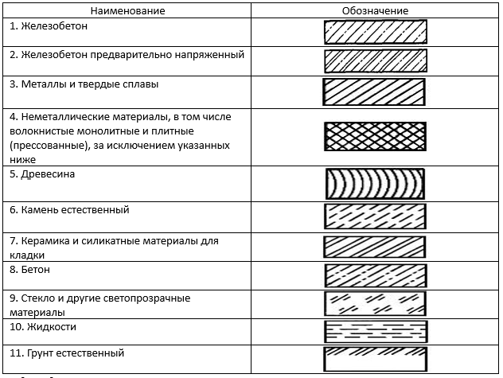
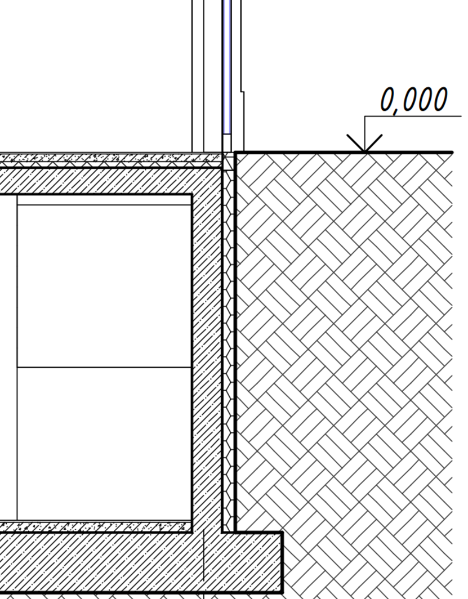
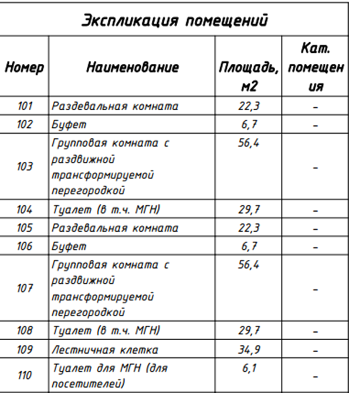
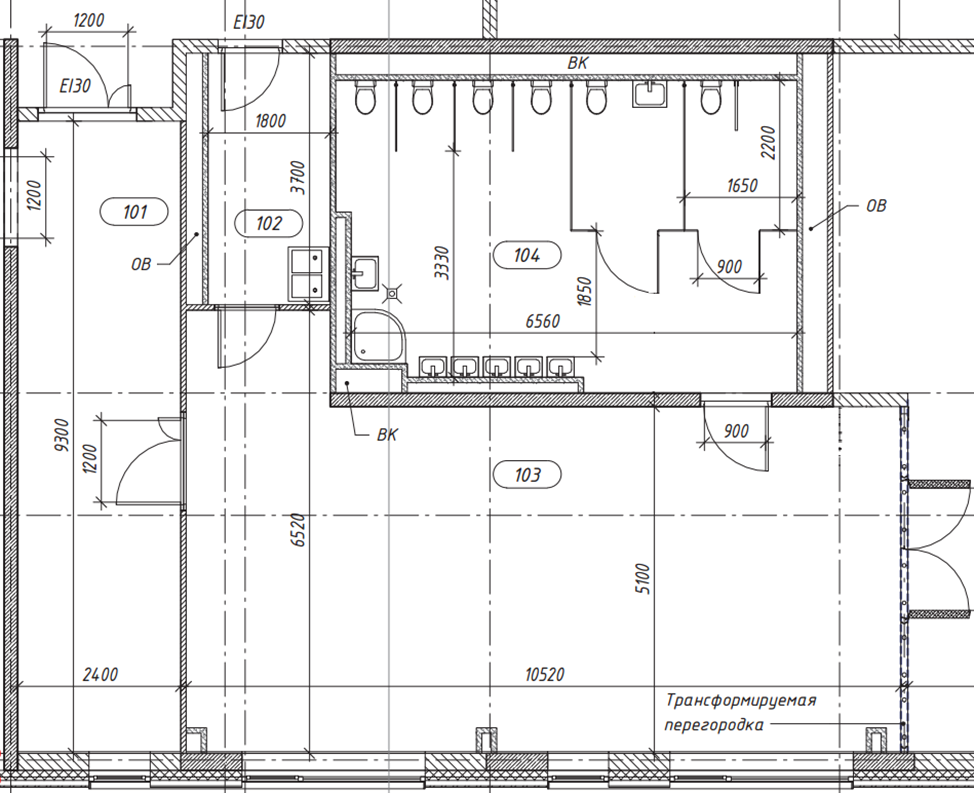
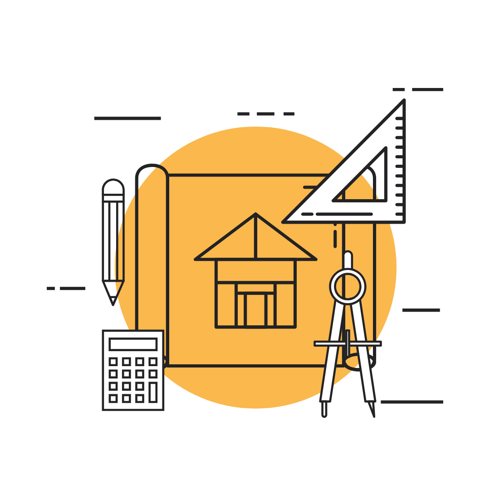

Важные моменты из чертежей конструкторов и архитекторов

В этом уроке мы разберем основы строительства, которые необходимы инженеру-проектировщику. Урок будет разбит на 2 части – информация необходимая для проектирования наружных сетей и для внутренних.
Начнем с наружных сетей. Они не ограничены пространством стен, соответственно есть много факторов, влияющих на специфику проектирования.
Первое – это район проектирования. От местоположения зависит и материал коммуникаций, и глубина заложения, и расчетные параметры систем.
Второе – грунты. Наружные сети по большей части находятся в земле (кроме воздушных ЛЭП), соответственно такие параметры как тип грунта, глубина промерзания грунта, уровень грунтовых вод влияют на возможность, способ прокладки сетей, а также материал пригодный для прокладки коммуникаций в данных условиях.
Например, торфяной грунт может загореться от искры и оседать.
Третий фактор – существующие сети. При проектировании необходимо ознакомиться со сводным планом инженерных сетей (СПИС), которые уже есть на территории проектирования, так как существуют нормативные указания расстояний между инженерными сетями, для городских и сельских поселений они описаны в СП 42.13330.2016, для производственных .
Закрепим материал:
- проверьте грунты и уточните район проектирования
- получите Сводный план инженерных сетей (СПИС),
- проверьте расстояния между коммуникациями (СП 42.13330.2016),и убедитесь, что твой кабель случайно не лежит поверх газовой трубы.
Мы не будем рассматривать информацию, в которой много ненужной воды, знания которой кроме как в разговорах за чаем с коллегами и применить будет негде. Мы рассмотрим только то, что действительно пригодится для инженера-проектировщика.
Первое, что необходимо понимать – это чертежи коллег. Конструкторы и архитекторы задают тон всем зданиям и сооружениям. Очень важно понимать, какие стены, где проходят, общепринятые обозначения подбирают согласно ГОСТ 2.306-68 и ГОСТ 21.201-2011

Любые обозначения материалов в документации должны сопровождаться условными обозначениями на чертежах, поэтому всегда обращайте внимание на них во избежание непонимания.
Также на чертежах для нас важны отметки пола или уровень пола относительно земли. Есть понятие нулевой отметки: это относительная отметка 0.000, которая равна уровню чистого пола первого этажа.
Уровень чистого пола – это отметка верха напольного покрытия, по которому будет ходить человек. Например, линолеум или ламинат, в разрезе пола это выглядит как на картинке.

Пример:
Если чистый пол на 0.000, а толщина стяжки – 10 см, то черновой пол – на -0.100.
Это важно для:
- прокладки труб под полом
- уклона канализации
- размещения теплого пола
Всегда уточняйте у архитектора: где чистый, а где черновой пол, если ошибетесь – труба окажется выше пола.
В совокупности с чертежами важны технико-экономические показатели – этажность, площадь и назначение помещений. На чертежах указаны экспликации, в которых есть название, площадь и нумерация помещений. Эти экспликации должны быть указаны на всех чертежах, в том числе и Ваших для удобства навигации.

Это нужно, чтобы:
- правильно рассчитать воздухообмен
- понять, где можно проложить трубы, а где – нет
Фрагмент плана этажа архитектурного чертежа вы можете увидеть на картинке ниже.

Всегда внимательно изучайте планировки помещений и при необходимости корректируйте их под расположение коммуникаций. Архитекторы расставляют помещения по своим нормативам и эстетическому взгляду. Вам же важно учесть удобство расположения коммуникаций, так сказать, связать красоту и практичность.
Проверочные карточки 1
{'title': 'Важные моменты из чертежей конструкторов и архитекторов', 'text': ''}
Карточка 1

Если чистый пол находится на отметке 0.000, а толщина стяжки - 50 мм, то на какой отметке находится черновой пол?
- +0.050
- -0.050
- 0.000
- -0.100
Ответ и пояснение
Ответ в исходных данных: -0.050
Карточка 2

Для чего инженеру-проектировщику важно знать отметки чистого и чернового пола?
- Чтобы правильно расставить мебель на плане
- Чтобы выбрать цвет стен
- Чтобы корректно спроектировать прокладку труб под полом и уклоны канализации
- Чтобы рассчитать освещенность помещений
Ответ и пояснение
Ответ в исходных данных: Чтобы корректно спроектировать прокладку труб под полом и уклоны канализации
Карточка 3

Что такое «нулевая отметка» в строительстве?
- Уровень земли
- Уровень фундамента
- Уровень чистого пола первого этажа
- Уровень потолка
Ответ и пояснение
Ответ в исходных данных: Уровень чистого пола первого этажа
. Источник и ограничения. Проверка ответов, анимация и серверные функции недоступны в статической копии.